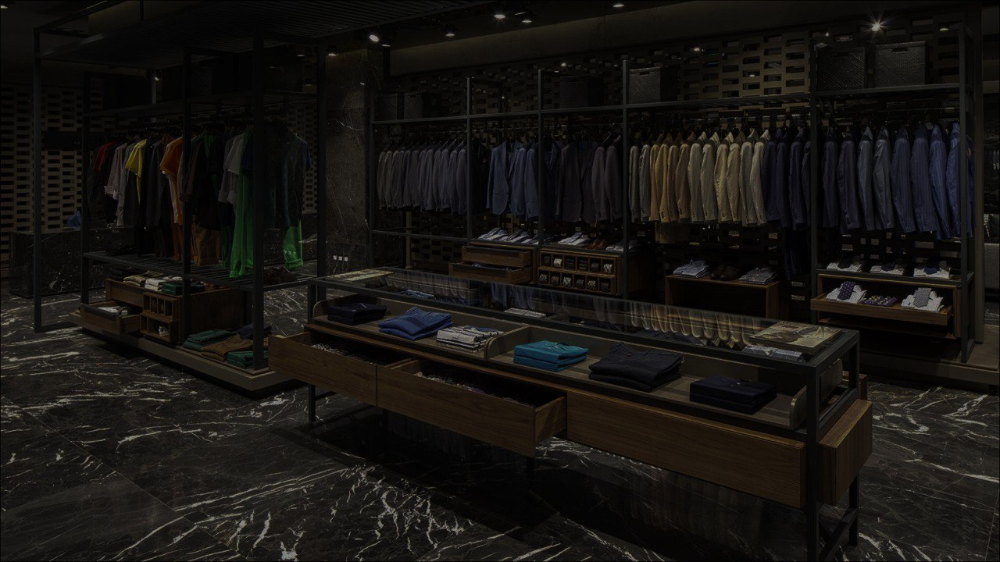
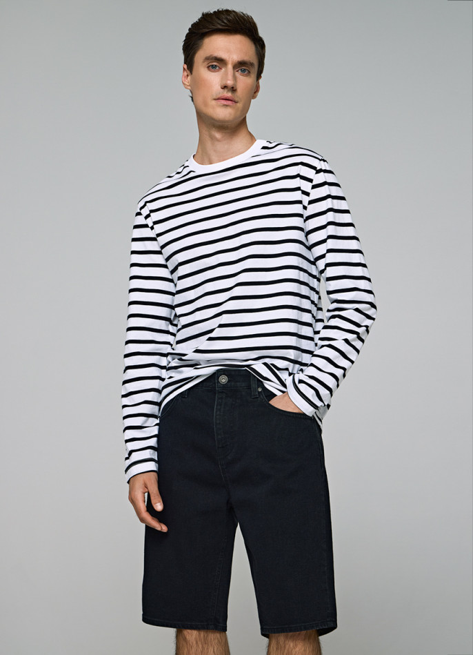
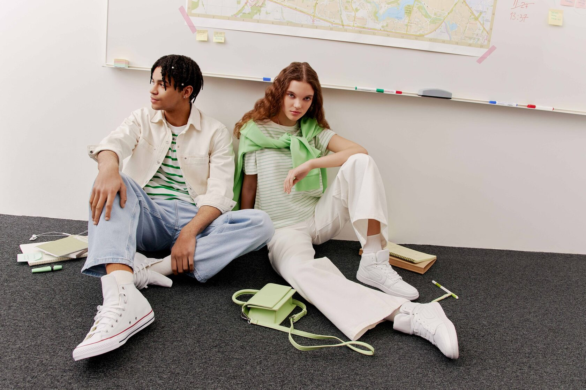
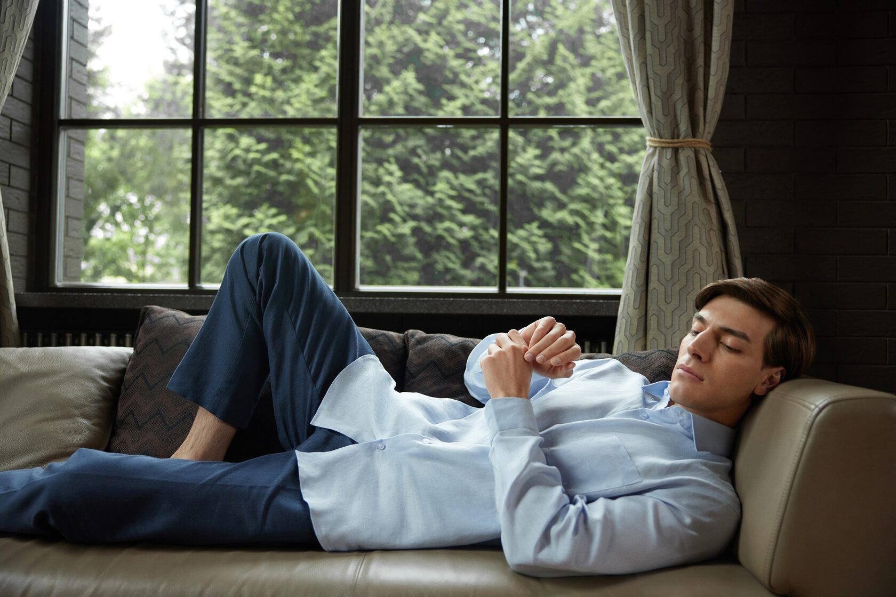
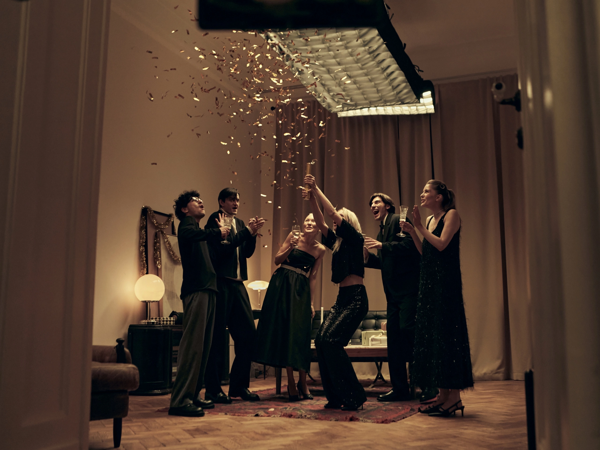
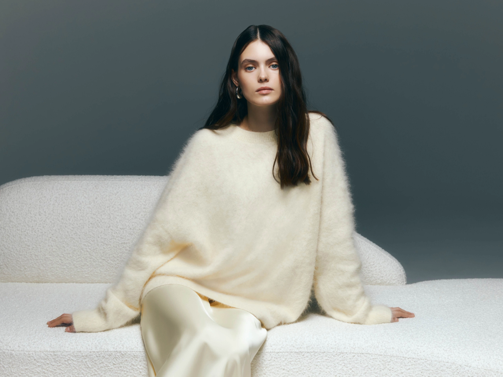

☰
ЛУКБУК
ХЛО'ПОК
О НАС
КОНТАКТЫ
Женщины
Мужчины
Авторизация
Регистрация
📦
0

Новая коллекция
Куртка-рубашка
Хлопок 100%
6000 р.
В корзину
Свободная рубашка
Хлопок 100%
2500 р.
В корзину
Рубашка
Хлопок 100%
1900 р.
В корзину
Брюки-парашюты
Хлопок 100%
1900 р.
В корзину
Брюки-чиносы
Хлопок 100%
4900 р.
В корзину

Шорты
80% хлопок, 18% полиэстер, 1% эластан
2900 р.
В корзину
Худи
60% хлопок, 40% полиэстер
3000 р.
В корзину
Зипка
60% хлопок, 40% полиэстер
4500 р.
В корзину
Рубашка
Хлопок 100%
5000 р.
В корзину
×
Корзина
Итого: 0 р.
Заказать
Преимущества нашей компании
Материалы
Мы используем только натуральные и экологически чистые материалы
Комфорт
Мы проектируем и моделируем до тех пор, пока вещь не станет идеальной
Простота
Мы верим, что простота в одежде максимально выражает индивидуальность человека
ЛУКБУК




<
>